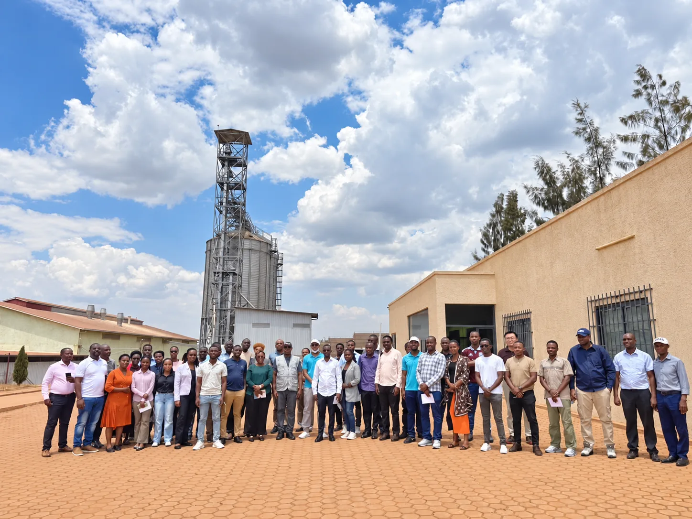
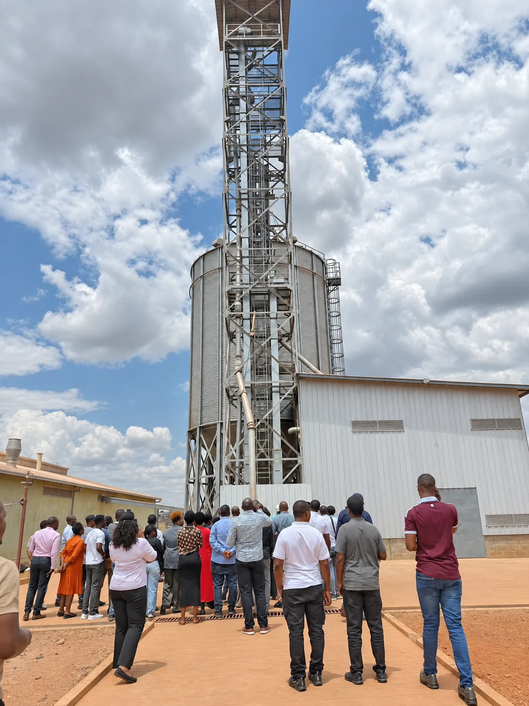
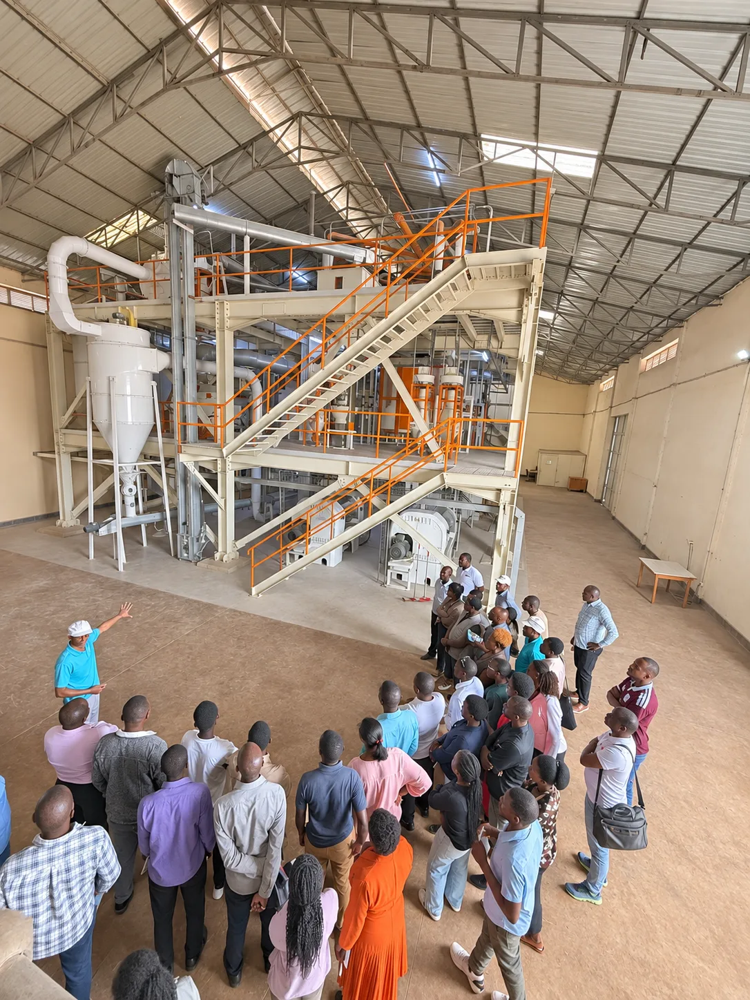
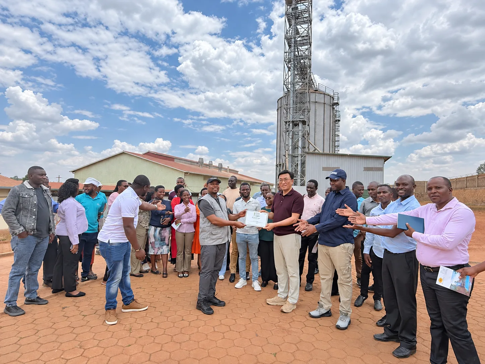

AGrowth · Sep 16, 2026 · 1 min read
AGrowth · Sep 16, 2026 · 1 min readAGrowth Hosts EAX EAGC Workshop Participants for Maize Milling Factory Visit
AGrowth Ltd welcomed participants from the Safe Grain Handling, Whole Grain Milling and Fortification Training Workshop for a factory visit on the morning of Sunday, September 13, 2026, at its maize flour production facility in Kigali, Rwanda.

The workshop was jointly organized by the East Africa Exchange (EAX) and the Eastern Africa Grain Council (EAGC). EAX identified AGrowth as a modern and exemplary facility within its network, making it a relevant site for practical exposure to maize storage and milling operations.

During the visit, participants observed how maize is stored in silos before processing and followed how AGrowth’s maize flour milling system moves grain through key milling machinery to produce flour. The tour helped connect workshop learning with day-to-day factory operations.

The visit also supported knowledge exchange among grain-sector professionals by giving participants a shared view of storage and milling practices in an operating facility.

AGrowth was pleased to host the delegation and contribute to practical learning across the regional grain sector.
← Back to Inside AGrowth